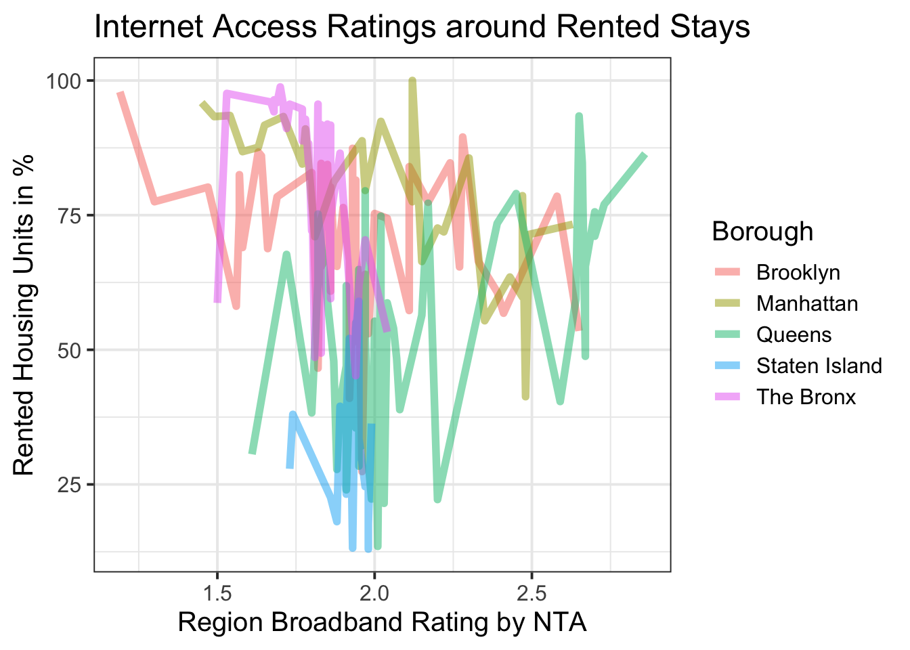
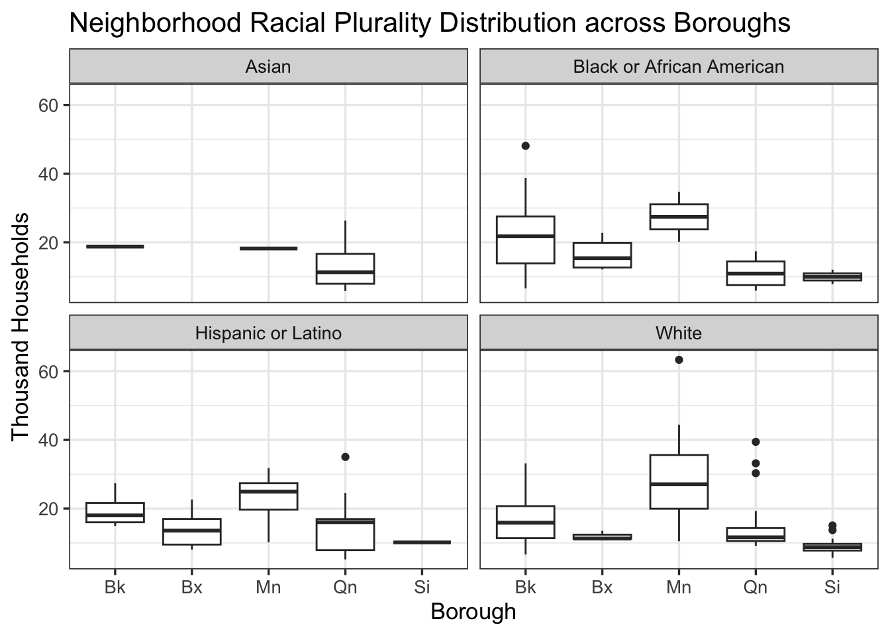
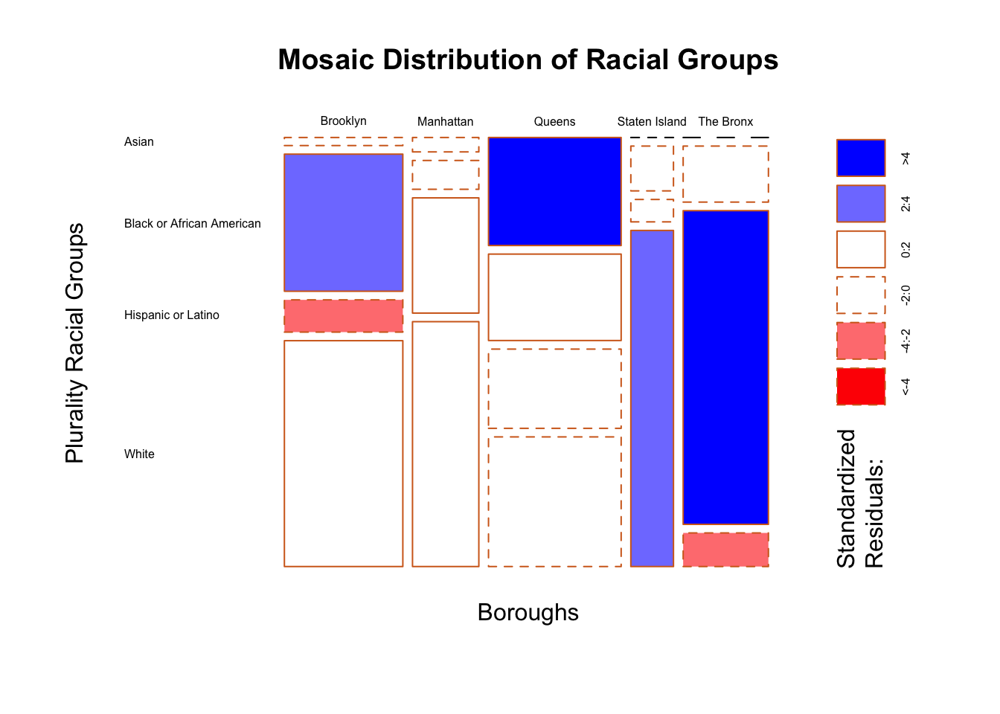
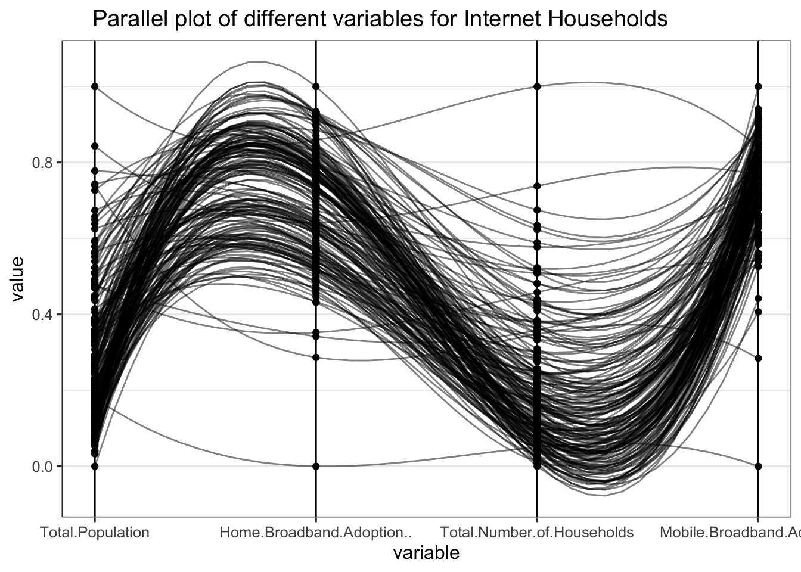

Chapter 11 Trends between Income and Internet

In the above graphs we can see a comparison of income levels (by borough) and several internet availability measures. The black line on each graph represents the trend between income and the respective measure of internet. The colors represent the boroughs and each dot is a neighborhood within the borough.
As we can see from the data, Manhattan seems to be the borough with the highest income. The green dots tend to be further right and away from the other boroughs demonstrating that trend. The rest of the boroughs are relatively close together regarding their income. We see this in looking at the clusters in each graph.
Now, looking at internet trends with regards to internet availability, there are some significant patterns to be aware of. First of all, when looking at the black trend line we can see that they are all positive trends except the top right graph representing mobile dependent households. For the other five comparisons, this signifies that higher incomes are correlated with better internet. Whether it be more public Wi-Fi hot-spots, faster internet, more selection with internet providers, or higher mobile and household internet adoption. As for the top right graph showing the negative trend. This is because mobile dependency is the inverse of better internet coverage. If more households are mobile dpendent it means they do not have internet in their and therefore a lower internet adoption rate.
Looking at these trends we can see that internet adoption is positively correlated to income level. As the higher the income the more available internet is in each neighborhood.
Significant Trend in The Bronx:

This graph represents families below the poverty line in each neighborhood compared to high speed internet availability. According to the US Census, the poverty line in the United States is annual income below $33,000. As for the y-axis variable, this represents the percentage of blocks in a neighborhood that have access to internet speeds of 900 Mbps or higher. This high speed internet is crucial for businesses operating several internet-dependent pieces of technology at once as well as any household with a large number of connected devices.
As we can see from the chart The Bronx seems to be isolated from the other boroughs. No neighborhood in The Bronx has complete access to internet speeds greater than 900 Mbps. Also, we see neighborhoods int he Bronx being further right on the graph than neighborhoods in other boroughs. This signifies more families below the poverty line compared to the other boroughs. These two factors again reinforce the idea that economic status and internet adoption are correlated.
11.1 Do the people in NYC living in rented stays have access to better internet facilities?

Above plot analyses the broadband effectiveness in and around rented stays. Students, employed or unemployed people need to ensure the rent they pay give them the best facilities that’s available in the region. As most of the people are immigrants, their internet connectivity concern may have a role in determining their quality of life as they may choose to live away from home. We can observe the Brooklyn borough has wide variance in the internet connectivity spread and broadband rating in neighborhoods, however Manhattan on the other end has pretty much better access and connectivity due to more activity and internet dependent businesses that prevail in the area.The Staten island has an average NTA rating of 1.8 which is less than average of other boroughs like the Queens and Manhattan but far better than the Bronx area.
11.2 What does the NYC household racial ethnicity distribution look like?


## NULLThe neighborhood Internet infrastructure typically utilized across different racial groups vary significantly. Double clicking on it, neighborhoods in a smaller borough with highly populated individuals get better access to infrastructure facilities, the above does showcase racial disparity . Couple of boroughs including Manhattan has fewer Hispanic groups compared to Black or African American neighborhoods, and the highest fraction of households in White groups depend and prominently access better Internet facilities than any other racial-plurality neighborhoods in NYC.
The mosaic plot also clearly demonstrates the spread and distribution in a very visual and effective manner to identify and learn the ethnicity distribution across neighborhoods affecting their social lifestyle.
11.3 Are we democratizing Internet Access to Everyone

This graph represents families in each neighborhood belonging to various ethnicity compared to high speed internet availability access . High speed access to rich and low speed to others isn’t democratizing internet access to everyone, isn’t it ? High speed internet is paramount for any household be it any ethnicity. Lot of Hispanic Latino individual neighborhoods have less internet adoption rate in the Bronx and other high visible boroughs like Manhattan. Are we taking the steps in the right direction to democratize internet access ? We continue to identify the patterns and disparities.
11.4 Will the rent you pay guarantee effective high internet ?

Finding a place to stay and rent in NYC is already tough, add it to the plethora of facilities one expects to pay to leverage services like internet. The above plot insight-fully showcases that be it 1000$ or 3000$ rent stay, people still lack internet services to a great extent. There are still 20-30% of individuals and neighborhoods that lack better facilities of high speed internet in Queens and Brooklyn boroughs. Paying more rent may guranatee a better lifestyle but doesn’t guarantee one a better high speed internet availability all the time.
11.5 How Satisfied are internet users in HCOL (High cost of living) & LCOL (low cost of living) neighborhood areas ?

Brooklyn demonstrates the widespread variance in the internet availability given the high valued houses they live in. On the other hand the region of The Bronx, people are averagely happy with the services provided. However, Manhattan being so much densely populated does showcase a link between better facilities for higher house values. Looking at this graph, certainly there is direct correlation on internet access in high cost of living neighbourhoods in the dense boroughs.
11.6 Are we moving to a mobile first era or households still rely on the high speed home internet ?

The above is a rhetorical introspection on what the future holds for NYC and the neighborhoods. The total population seemingly has direct relation to increasing family size, bigger and better homes and lifestyle. This increase in households leads to fewer increase in home broadband connections as compared to the vast increase in mobile broadband users. Across all neighborhoods in NYC 3-5 years down the line, we already are and definitely moving to a mobile first generation where prevalence of mobile phone users and internet access is gonna splurge exponentially. Households will still rely on home broadband for majority of tasks but the future awaits to see the transition and change in human behavior to mobile first.
Sources: https://www.census.gov/topics/income-poverty/poverty/guidance/poverty-measures.html#:~:text=Step%201%3A%20Determine%20the%20family’s,threshold%20(below)%20is%20%2433%2C148.